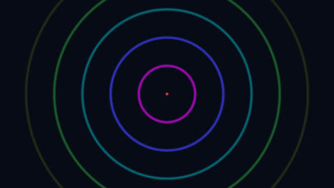

HomeAccueil / ExamplesExemples
Pulsing circlesCercles pulsants
Time is turned into a phase from 0 to 1 over the loop length (6 s); the circles return exactly to their starting state.Le temps est ramené à une phase de 0 à 1 sur la durée de la boucle (6 s) ; les cercles reviennent exactement à leur état de départ.

CategoryCatégorie: LoopsBoucles - cercles_pulsants.glsl - 21 lineslignes - File on GitHubFichier sur GitHub
In the program: Examples, choose it, Add to the list. Or copy the code into a file next to the program and drop it on the window.Dans le programme : Exemples, choisissez-le, Ajouter à la liste. Ou copiez le code dans un fichier et glissez-le sur la fenêtre.
CodeCode
cercles_pulsants.glsl
// SPDX-License-Identifier: GPL-3.0-or-later
// Copyright (C) 2026 Patrick JAILLET
// fr: Cercles pulsants — Le temps est ramené à une phase de 0 à 1 sur la durée de la boucle (6 s) ; les cercles reviennent exactement à leur état de départ.
// en: Pulsing circles — Time is turned into a phase from 0 to 1 over the loop length (6 s); the circles return exactly to their starting state.
// duration=6
void mainImage(out vec4 fragColor, in vec2 fragCoord) {
vec2 uv = (fragCoord - 0.5 * iResolution.xy) / iResolution.y;
float ph = fract(iTime / 6.0);
float r = length(uv);
vec3 col = vec3(0.03, 0.04, 0.09);
for (int i = 0; i < 6; i++) {
float f = fract(ph + float(i) / 6.0);
float rad = f * 0.9;
float w = smoothstep(0.012, 0.0, abs(r - rad)) * (1.0 - f);
col += w * (0.5 + 0.5 * cos(6.2831853 * (f + vec3(0.0, 0.33, 0.67))));
}
fragColor = vec4(col, 1.0);
}